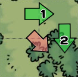

GeoQuest
The closest you can get to geocaching in a box!
GeoQuest is a board game based on geocaching, for 2 to 6 players ages 12 and up. Once you learn how to play, a typical game takes about 40 minutes. The object of the game is to be the first player to reach 25 points, or find all of the caches on the board. You gain points by finding caches, or from various random events that happen during the game. It is possible to lose points, but you can never go below zero.
If you're just learning to play, you can skip the sections highlighted like this for now.
| CONTENTS | ASSEMBLY |
Your GeoQuest game comes with the following components:
- Folding game board
 Two custom dice (affix the stickers as shown at the right)
Two custom dice (affix the stickers as shown at the right)
- Cache disks showing the type and level of the caches
- Puzzle Category tokens (used for puzzle caches; see below)
- Four decks of cards: Cachers, Events, Equipment, and Ensembles
- Six colored Cacher tokens (1 per player, for marking your position on the map)
- Six colored Tracking panels (to organize your cards and points)
- Six sets of colored chips (for marking caches as they are found)
- Assorted Point and First-to-Find coins (for keeping track of your score)
- Travel Bug tokens (these show the Travel Bug's goal)
- A few blank cards are provided for you to make up your own
THE MAP BOARD
| Clear | Forest | Swamp | Rocky | Urban | Path | Stream |
The type of terrain does not affect movement directly. However, some types of equipment let you move faster on certain types of terrain. Similarly, some events can have different effects depending on what type of terrain you are in when they occur. Paths and Streams do affect movement (see the MOVEMENT section below).
SETUP
1. CACHE PLACEMENT
| Pick eight random Cache Disks, and place them on any map tiles (except the lake). Only one cache can occupy a tile. Spread them around the board (two in each quadrant), among the various terrain types. | |
| For any puzzle caches, select a random Puzzle Category token, and place it with the cache disk. | |
| Add an FTF coin under each cache disk; these are bonus prizes (worth one point) for the first person to find the cache. | |
| Each player draws one Travel Bug, and places that token under any cache disk. |
Any player may view any of these tokens at any time; puzzle categories or Travel Bug goals are not secret. Usually it's best to keep the Cache Disk on top, since that's the most important one to know about when you're planning your moves.
2. PLAYER SETUP
Shuffle the Equipment and Event cards (separately), and place the decks within reach. Give each player the following:
- one of the colored Cacher Tokens (to mark your position on the map)
- the matching Tracking Panel (to help organize your items)
- some of the matching colored chips (to mark caches you've found)
- one random Cacher card
- one random Equipment card
Note that Cachers also have unique advantages and disadvantages. For example, Grampa Gary gets +1 when searching. Don't forget to apply these special rules during the game.

 Each Cacher Token starts just off the board, next to any one of the four
Latitude/Longitude Arrows which match the Cacher's letter.
You can use one of your colored chips to mark your
starting location (an Event may require you to return to that spot later).
Each Cacher Token starts just off the board, next to any one of the four
Latitude/Longitude Arrows which match the Cacher's letter.
You can use one of your colored chips to mark your
starting location (an Event may require you to return to that spot later).
PLAYING THE GAME
TURN SEQUENCE
A turn refers to a single player. A round refers to one turn for all players (it still counts as a round, even if some players had to skip their turn).Each turn has two parts: (1) events, and (2) moving/searching. At the beginning of your turn, you must resolve any Event card which has been played on you. Follow the instructions on the Event card. In some cases, this may cause you to end your turn before you get a chance to roll.
At the beginning of your turn, you declare whether you are going to Move, or Search. You may only Search if your token is located in the same tile as a Cache you have not yet found. You roll both dice and add the numbers together to determine how far you can move (or how well you searched).
The dice are slightly different. Both have sides with pips like normal dice, representing numbers from zero to four. Various combinations are possible, so that you can roll a total between zero and seven; the average is three. Rolling doubles triggers an event; see the EVENTS section below for more information. Each die also has one special red or green side (which counts as zero when moving); these are explained in the SEARCHING and New Cache Event sections below.
MOVING
|  |
Normal Movement On your turn, you may move your token up to the total number you rolled on both dice (plus any bonuses you may get). This can be from 0 to 7 tiles (or more with bonuses). You don't have to move the full amount. Each step of your move must be to an adjacent tile; you may not move diagonally. The FIND and DNF sides count as zero. |
 |
Paths Using a Path gives you a +1 bonus when moving. Each turn, your first move along a Path is free. Even if you roll zero, if your token is on a Path, you can move one tile along that path. Note that all Urban tiles count as Paths. You don't get the free move just by crossing a path. |
 |
Streams Crossing a stream costs three movement points, so you'll need to roll at least a 3 (including any move bonuses) to get across. If you roll less than three, you can still move, but you can't cross the stream this turn. This rule does not apply if you cross the Stream using one of the bridges. |
 Movement Bonuses: Some Cachers and Equipment cards gives you a bonus (or penalty) to move.
For example, if you have the Binoculars, you may move an
extra tile if you rolled a four or higher. In some cases, this bonus requires a
certain type of terrain. For example, the Hiking Boots
give you a +1 when you are moving in Forest terrain (you get the +1 if you move
into or out of any Forest tile during your turn). You may use more than one movement bonus
per turn.
So, if you happen to have the Hiking Boots
and the Binoculars, you can combine them to move two extra
tiles on a single turn.
Movement Bonuses: Some Cachers and Equipment cards gives you a bonus (or penalty) to move.
For example, if you have the Binoculars, you may move an
extra tile if you rolled a four or higher. In some cases, this bonus requires a
certain type of terrain. For example, the Hiking Boots
give you a +1 when you are moving in Forest terrain (you get the +1 if you move
into or out of any Forest tile during your turn). You may use more than one movement bonus
per turn.
So, if you happen to have the Hiking Boots
and the Binoculars, you can combine them to move two extra
tiles on a single turn.
 Jumping: Some equipment (such as the FRS Radio) and events (such
as Broken Wrist and Meet and Greet)
allow you to jump to other locations. This simply means that
you move your token to another location, ignoring any movement bonuses,
penalties, or other terrain effects (such as Stream crossing restrictions).
Jumping: Some equipment (such as the FRS Radio) and events (such
as Broken Wrist and Meet and Greet)
allow you to jump to other locations. This simply means that
you move your token to another location, ignoring any movement bonuses,
penalties, or other terrain effects (such as Stream crossing restrictions).
SEARCHING

 One die has a special FIND side. If you roll this, you
automatically find any cache you are searching for. The other die has a special
DNF "did not find" side. If you roll the DNF, you fail to
find the cache (no matter what your rolled on the other die). You must wait
until your next turn to try again. Otherwise, apply any bonuses or penalties
to determine your Search score. If your Search score is equal to or higher than
the cache level, you find the cache!
One die has a special FIND side. If you roll this, you
automatically find any cache you are searching for. The other die has a special
DNF "did not find" side. If you roll the DNF, you fail to
find the cache (no matter what your rolled on the other die). You must wait
until your next turn to try again. Otherwise, apply any bonuses or penalties
to determine your Search score. If your Search score is equal to or higher than
the cache level, you find the cache!
Geocachers often team up to find caches. Any time two or more cachers are both on the same tile, they all get credit for the find if any one of them finds the cache. Only the player who makes the successful Search roll gets the FTF bonus point. If another play finds the cache for you, you get the points and equipment on your next turn; you don't need to roll (and you don't get to move).
FINDING A CACHE
| When you find a cache: |
|
||||||
|


When you find a cache while geocaching, you typically trade items. This means you take a trinket out of the cache, and leave something to replace it. When you find a cache in the GeoQuest game, you get to draw two Equipment cards from the deck. You can keep either of these, but you must return the other card into the deck. So, you'll gain one Equipment card each time you find a cache (as long as you have room for the Equipment).
GEOCACHES
 Puzzle caches require that you solve a puzzle to get the location of
the cache. In GeoQuest, the row and column letters (of the tile where the
cache is hidden) are used as part of the puzzle. Before a player can search for the
cache, she must solve the puzzle by supplying a word or phrase
that contains those two letters and fits the category (shown on the puzzle
category token). In most cases, the letters can appear anywhere in the solution, in any order
(there are a few puzzle-specific exceptions).
The puzzle should only be solved when the player's token is at the cache location.
Puzzle caches require that you solve a puzzle to get the location of
the cache. In GeoQuest, the row and column letters (of the tile where the
cache is hidden) are used as part of the puzzle. Before a player can search for the
cache, she must solve the puzzle by supplying a word or phrase
that contains those two letters and fits the category (shown on the puzzle
category token). In most cases, the letters can appear anywhere in the solution, in any order
(there are a few puzzle-specific exceptions).
The puzzle should only be solved when the player's token is at the cache location.
Let's say you want to find a puzzle cache with the category of Animals at row U and column Z. You could solve this puzzle using the word "buzzard". Another player could also solve it using a different animal such as "zebra mussel". Multi-word and proper names are usually fine; solving should be fun and not too frustrating!
Each player wanting to search for the cache must provide a different solution. Once you've solved the puzzle, treat it just like a normal cache: you still need to make a successful Search roll to find it. If you fail to find it with your first Search roll, that's okay. No need to solve the puzzle again; just search again next turn as you would for any other cache.
Each time you successfully find a stage, you may continue rolling to try and find the next stage. So it is possible to find a multi-cache in a single turn -- or it may take several turns (especially for those level 4 or higher). You only have to find each stage once (keep count each time you make a successful Search roll); you don't have to start over each turn. If more than one cacher is on the same spot, each successful Search roll counts for everyone on the tile. Note that only the first roll on any turn may trigger an event.
EQUIPMENT
 Various types of geocaching gear are represented in the game using the deck of
Equipment cards. Although you don't need any special equipment to geocache
(other than a GPS receiver), some of it can be quite helpful.
In the GeoQuest game, the equipment often provides a bonus, such as the
Flashlight, which helps you when searching.
Various types of geocaching gear are represented in the game using the deck of
Equipment cards. Although you don't need any special equipment to geocache
(other than a GPS receiver), some of it can be quite helpful.
In the GeoQuest game, the equipment often provides a bonus, such as the
Flashlight, which helps you when searching.
Other Equipment cards can prevent the effects of certain events. For example, the Insect Repellent can prevent the Mosquitoes or Ticks from bothering you. Most of the time you just need to have the Equipment card on your Tracking Panel to benefit from it. Sometimes, you must discard the card to use it. For example, the First-aid Kit can be discarded to prevent various injury events in the game. Unlike Event cards, when an Equipment card is discarded, shuffle it back into the deck.
You may have up to four Equipment cards (placed face up on your Tracking Panel). If you already have all the Equipment cards that you are allowed when you draw a new one, you must either discard it or one of your other Equipment cards. Some Equipment cards (such as the Backpack) allow you to have more than four Equipment cards in play.
 At the bottom of each Equipment card, there is an Ensemble
name. For example, the Compass, Batteries, and
Pocket Knife cards comprise the
Eagle Scout Ensemble. Each Ensemble is made up of three
Equipment cards. If you're lucky enough to get at least two of the cards in a particular Ensemble,
you get a special bonus (shown on the Ensemble Reference Card). Find the
card, and add it onto your Tracking Panel.
At the bottom of each Equipment card, there is an Ensemble
name. For example, the Compass, Batteries, and
Pocket Knife cards comprise the
Eagle Scout Ensemble. Each Ensemble is made up of three
Equipment cards. If you're lucky enough to get at least two of the cards in a particular Ensemble,
you get a special bonus (shown on the Ensemble Reference Card). Find the
card, and add it onto your Tracking Panel.
Some of these special effects (such as the Engineer Ensemble) are triggered when a particular roll is made. When a game effect (such as Determined Dan) allows a player to re-roll the dice, the original (ignored) roll doesn't trigger the effect. However if a player takes another turn, each roll has a chance of triggering an Ensemble bonus. When a player makes multiple rolls while searching for a multi-cache, each roll has a chance to trigger ensemble effects.
EVENTS


 Whenever you want to Move or Search, you roll the two dice. If you roll
doubles (the same number, regardless of color), you draw an Event card (before moving or searching).
Don't reveal the card to the other players yet. You may keep it, or play it on yourself or
another player. Players may only keep one Event card at a time though, so if you
already have one, you'll have to play or discard one of them.
Whenever you want to Move or Search, you roll the two dice. If you roll
doubles (the same number, regardless of color), you draw an Event card (before moving or searching).
Don't reveal the card to the other players yet. You may keep it, or play it on yourself or
another player. Players may only keep one Event card at a time though, so if you
already have one, you'll have to play or discard one of them.
To play an Event card on yourself, reveal it (and discard it) at the beginning of your turn, before you roll. To play one on another player, place it face-up in front of that player. The event will take effect at the beginning of that player's next turn. Only one Event card can be played on a person at a time though, so you can't target a player who already has an Event card played on them. Unlike Equipment cards, when an Event card is discarded or resolved, remove it from the game.
Some event cards (such as Fresh Snow) are marked PLAY NOW. If you draw one of these, follow the instructions immediately, before moving or searching. Others (such as Helpful Hint) are marked PLAY ANY TIME. You may discard this type of event card whenever you like (even after you roll) to have it take effect.
Most events only affect the current player during her turn. Some events affect more than one player, or last one or more rounds. For multi-round events you may want to add markers on the card, and remove a marker as each round ends. Even if an event is not resolved immediately, the card is removed from play (and another Event card may be played on that player). Check the Clarifications online if you have any questions.
New Cache Event and Random Cache Placement
New caches should be placed randomly. You can choose a random location by selecting two Cacher cards (each card has a unique letter). One determines the latitude/row, and the other determines the longitude/column. The rows and columns are marked with the letters of the alphabet. For example, if you pick "S" and "V", place the cache disk in row S, column V. Caches cannot be placed on the lake, and two caches cannot be on the same tile; roll again if needed.
TRAVEL BUGS
 Travel Bugs are represented in GeoQuest using ladybug tokens.
Players can acquire them by finding a cache which contains them.
If a cache you found contains any Travel Bugs, you may take one (at most);
move it from the map onto your Tracking Panel.
Travel Bugs are represented in GeoQuest using ladybug tokens.
Players can acquire them by finding a cache which contains them.
If a cache you found contains any Travel Bugs, you may take one (at most);
move it from the map onto your Tracking Panel.
If you have any Travel Bugs with you when you end your turn on a tile that contains a cache which you have found, you may leave them in that cache. To do so, put the Travel Bug token from your Tracking Panel onto the cache. You can leave any number of these in the cache; you gain one point for each one you leave. You can't leave one in the same cache that you got it from.
 Each Travel Bug has a goal (shown on the token).
If you achieve its goal, then you gain three points (instead of the one point
you normally get). For example, you could leave the Travel Bug shown on the right
in any cache which is next to a Stream to achieve its goal.
When a Travel Bug reaches its goal, it is removed from the game.
Each Travel Bug has a goal (shown on the token).
If you achieve its goal, then you gain three points (instead of the one point
you normally get). For example, you could leave the Travel Bug shown on the right
in any cache which is next to a Stream to achieve its goal.
When a Travel Bug reaches its goal, it is removed from the game.
Sometimes a Travel Bug might start out in a cache that would satisfy its goal; if that happens, you must find another cache to earn the three points. In some cases, it may not be possible for a Travel Bug to reach its goal; but you can still gain one point by leaving it in a cache.